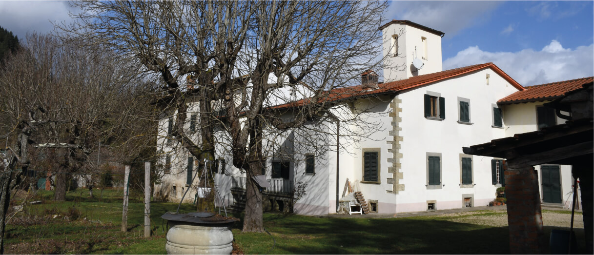
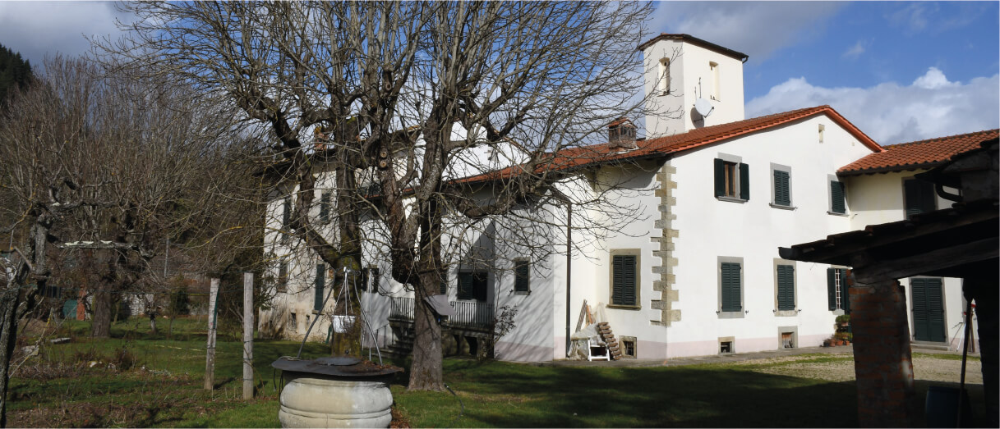

Em parceria com a Tenuta San Fabiano, vinícola mais renomada da região, a Fattoria Villa D’Ancona transforma a paixão de longa data pela bebida em rótulos cuidadosamente produzidos -- começando pela seleção criteriosa das uvas, passando pela colheita manual, os processos de fermentação e maturação tradicionais da Toscana, até chegar na sua taça: o melhor final feliz imaginável para essa grande história.
Chianti
2018
Toscana
13,5% VOL.
750ml
 
